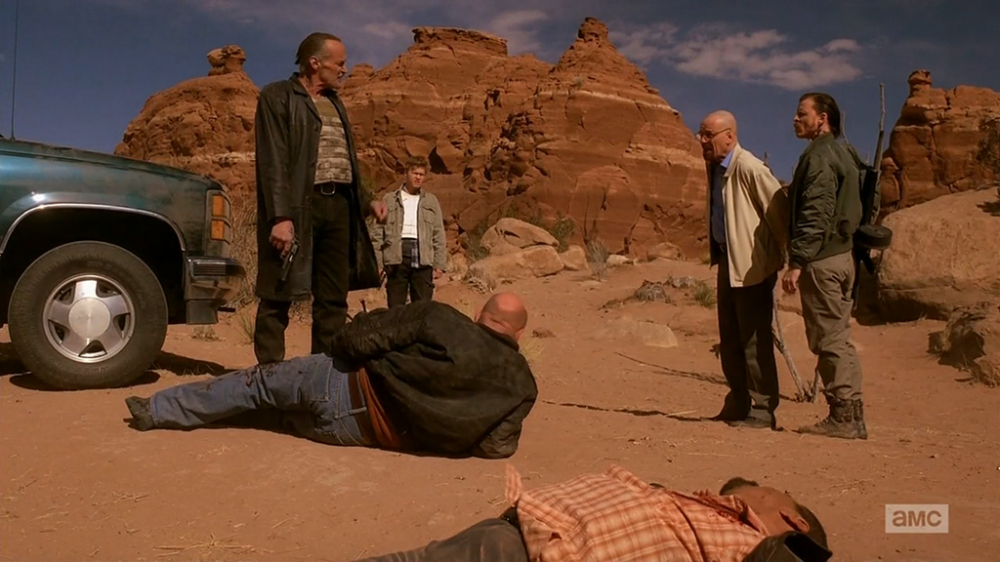

Conoce los mejores momentos de la serie en cada imagen
Breaking Bad es considerada por muchos como una de las mejores series de televisión de la historia, gracias a su brillante guión, actuaciones sobresalientes y una trama que engancha desde el primer momento. La historia de Walter White, un profesor de química que se convierte en un temido narcotraficante de metanfetamina, ha cautivado a millones de espectadores en todo el mundo. En esta galería de fotos, podrás revivir los momentos más icónicos de la serie, desde la primera vez que Walter y Jesse cocinaron metanfetamina juntos hasta el épico final de la serie. Prepárate para sumergirte en el mundo de Breaking Bad y recuerda por qué esta serie sigue siendo tan querida y recordada por tantos años.

